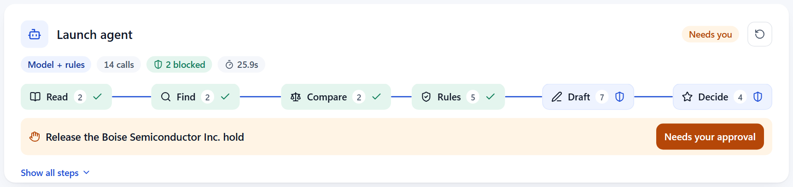
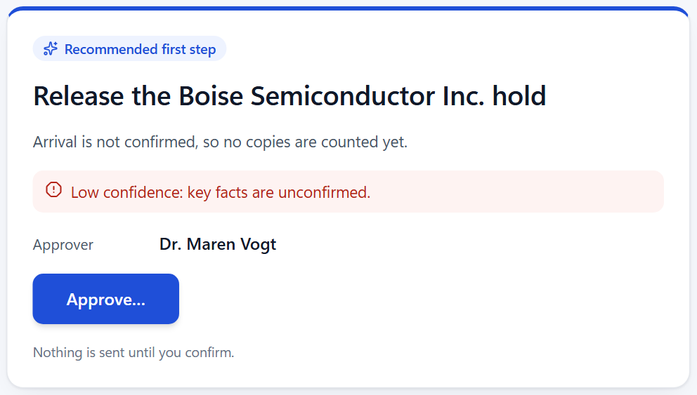
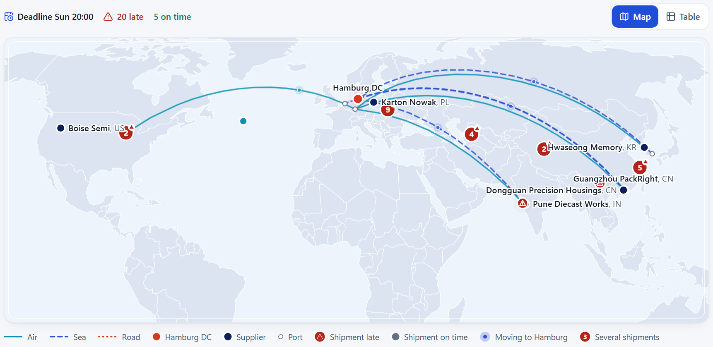
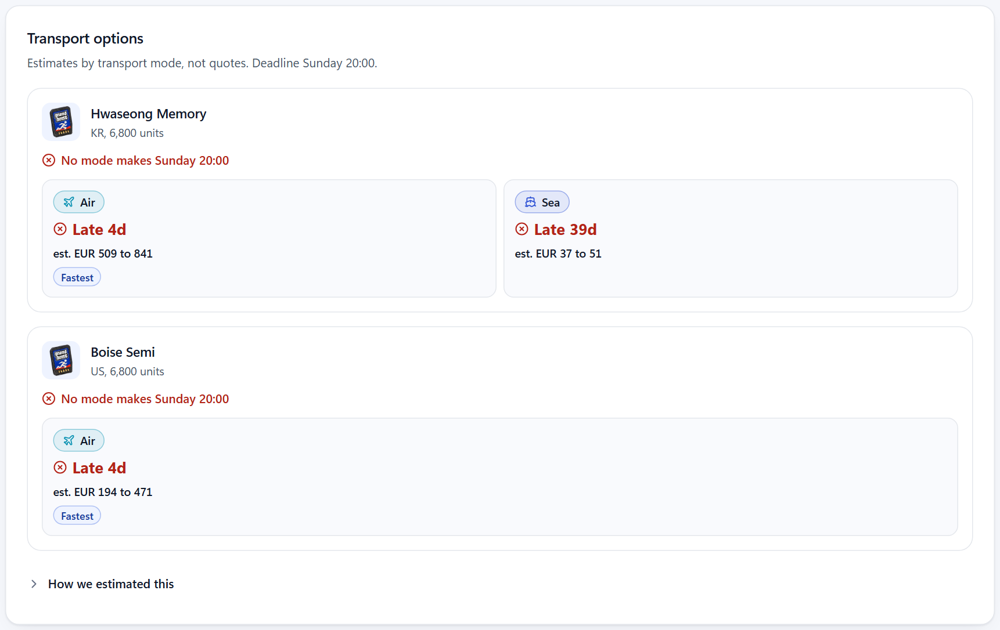
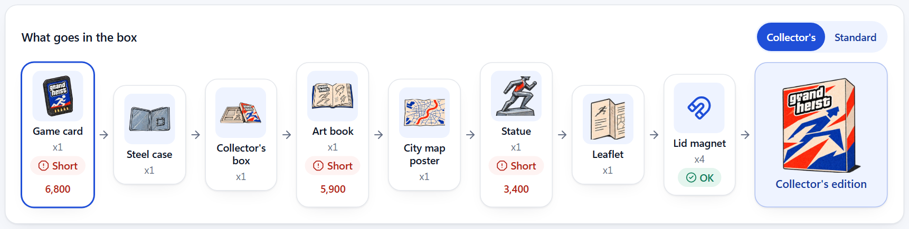
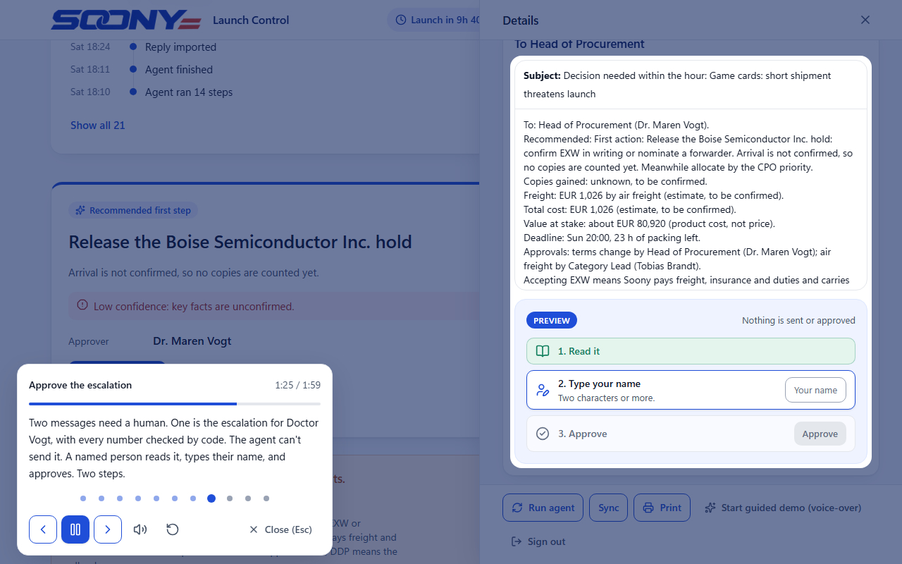

From document chaos to confident decisions.
Find out at the desk, not at the dock.
An AI agent that reads the files, finds what breaks, and keeps a human in charge.
Plan sheet: game cards "OK, +13,200 to spare". Supplier shipped 28,000 of 48,000; packing had already used the cards.
"We find out at the dock." · Soony kickoff notes
The real problem is not missing data. It is disconnected information, and decisions that come too late.
Launch Control connects information across documents, finds contradictions, tracks supply risk and recommends the next action. In one screen it answers four questions:
We don't just find problems. We turn information into decisions.


Fewer manual checks · risks found earlier · decisions made faster · an audit trail for every decision. Every avoided delay protects revenue, cuts rush costs and makes launches reliable.
Consumer electronics bundles, retail launches, manufacturing ramp-ups, subscription boxes.
Time saved per decision · risks found before the dock · decisions accelerated.
| Model | Recurring subscription by projects, users and documents processed. Optional integration fee for large enterprises. |
|---|---|
| Price idea | A launch-week or per-project fee, well below one expedited shipment. A hypothesis to test with customers. |
| Go-to-market | 1) Paid pilots with a few launch-operations teams. 2) Prove value with KPIs. 3) Enterprise sales and partnerships. |
| Financing | Revenue-first: pilots validate willingness to pay and fund development. |
| Main costs | Cloud, AI processing, customer integrations. |
The vision: the decision layer between enterprise data and real-world operations.




ERP, Excel, supplier PDFs, scans, contracts, policy, memos. New data drops are synced and re-checked.
Stock, shortage, hours, priority and approver tiers come from the files, never from the AI.
The model chooses among 15 read-only tools: holds, conflicts, transport, pricing, policy, drafts.
Every number in an AI draft is re-verified in code. A wrong number is replaced.
The agent cannot send, pay, book or approve: those tools do not exist for it. A named person approves in two steps, and approval is cancelled if the data changes. If the model is unavailable, a labelled rule-based mode takes over.
| Supplier | Fastest mode | vs Sunday 20:00 |
|---|---|---|
| Hwaseong (KR) | Air | about 4 days late |
| Boise (US) | Air | about 4 days late |
| Art-book supplier (PL) | Road | fits, if stock exists |
So a faster flight is not the answer; the lever is the hold at Boise.
Confidence is shown as low because arrival is not confirmed, and the screen says so.
Launch Control does not replace decision-makers. It gives them the right information before it is too late.